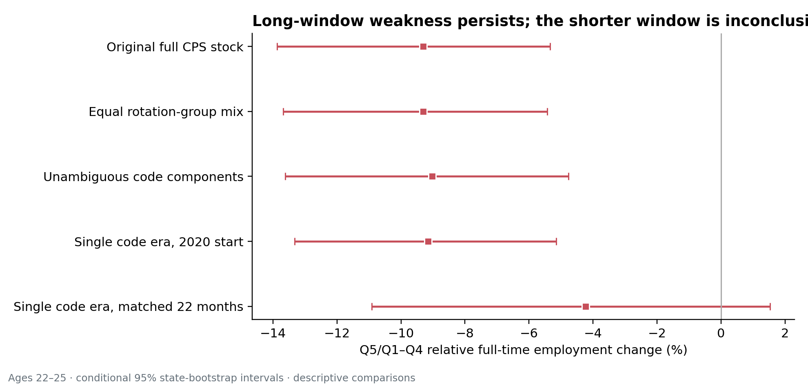
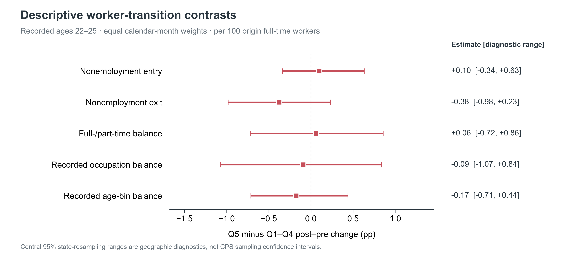

AI exposure and early-career employment in the United States
Core research question
Does weaker full-time employment among young workers in highly AI-exposed fields reflect fewer hiring opportunities, poorer offered job quality, or both? Who experiences these changes?
We examine worker adaptation across the age distribution, with particular attention to labor-market entrants and workers facing economic vulnerability.
Relative full-time employment weakness, unresolved adjustment pathways, and the limits of causal attribution.
Updated November 26, 2026 · CPS, ACS, SIPP, and public administrative data · Own THAIE mapping
Young workers in the highest THAIE quintile exhibit weaker relative full-time employment in long-window comparisons. Rotation and occupation-code checks preserve that pattern, but a shorter matched window is inconclusive. Neither a specific worker-transition pathway nor an AI causal effect is established.
State overview
Where do young adults hold full-time jobs in highly exposed occupations?
THREE-YEAR STATE PICTURE · AGES 22–25 · THAIE Q5
Full-time employment in THAIE Q5 · November 2023–October 2026
Rate = Q5 full-time workers ÷ all civilian noninstitutional residents aged 22–25 in each state.
The map shows period averages, not a 2026-only estimate or the full-time share among Q5 workers. All 50 states and DC are included.
Loading pooled state estimates…
Loading state details…
The latest window contains 35 observed months out of 36; October 2025 was not collected and is not filled. It supplies 15,447 Q5 full-time person-month records nationally, with at least 89 in each state/DC. Repeated records are not distinct workers. Hover, tap, or focus a state for its weighted population, observed sample, and working 95% interval. These household-cluster intervals do not recover the full CPS survey design or establish AI effects. Colors show employment rates, not statistical significance.
Denominators, survey weights, and official benchmarks
Nationally, the latest pooled Q5 full-time rate is 10.61% of the entire same-age population. Full-time workers are 81.69% of employed Q5 youth. These are different denominators. Population counts average survey-weighted monthly stocks across observed months; unweighted person-month records measure sample support.
The earlier January–September annual map and official BLS benchmark checks remain archived separately. The benchmark reproduces broad published national statistics within rounding, but there is no published official statistic for our exact THAIE Q5 group. Small age-specific state differences and public-file/weight-vintage limits remain documented.
Does weaker full-time employment among young workers in highly AI-exposed fields reflect fewer hiring opportunities, poorer offered job quality, or both? Who experiences these changes? We distinguish employment stocks from individual entry, exit, schedule changes, occupation movements, and aging. Ages 22–25 are the focal group; broader age comparisons remain available in the descriptive explorer and archived models.
Abstract
We combine independently reconstructed monthly CPS employment, annual ACS validation, linked CPS transitions, SIPP histories, and public administrative hiring data using frozen THAIE occupational exposure. ACS pooled comparisons show a 7.41% relative decline in the full-time-hours proxy for ages 22–25 in Q5 versus Q1–Q4, while Q5’s own absolute full-time count change is imprecise. CPS long-window current full-time comparisons show approximately 9% relative weakness after rotation and occupation-code checks. A shorter matched 22-month comparison yields −4.23% with a diagnostic interval spanning zero. Controlled entry DID does not establish a greater Q5 entry decline. Stock–flow accounting and response-adjusted pathway contrasts do not isolate an entry, exit, schedule, occupation, or aging mechanism. Survey reconciliation remains substantial; forcing endpoint margins to agree does not identify missing behavior. The evidence documents relative employment weakness, with sensitivity to period and design, rather than an established AI causal effect or individual downgrading into contingent work.
The contribution is a measurement-conscious comparison of employment quantities and adjustment pathways, including an explicit audit of why survey flows and stocks differ. The analysis is a working research record, not a preregistered causal experiment. Earlier exploratory specifications are preserved separately.
Related literature
Exposure comparisons, firm-adoption studies, and individual transitions answer different questions. The literature is therefore grouped by estimand rather than treated as a vote for or against AI displacement. Working papers, research notes and peer-reviewed evidence are identified separately. The source versions below were checked on November 26, 2026.
US resumes and AI-integrator posting signals; firm adoption comparison
The revised abstract associates adoption with weaker junior employment, chiefly slower hiring.
Seniority is not age; adoption signals, selected firms and pretrends differ from exposure-only public surveys. No inaccessible revised coefficient is quoted.
CPS; ages 20–24 versus 25–55; entry and exit comparisons
Highlights reduced inflows from nonparticipation rather than increased layoffs in young exposed occupations.
Different age band, exposure measure and risk set; explicitly uncertain causality. Our controlled entry test does not reproduce a resolved extra Q5 decline.
CPS rotation overlap, classification errors and stock-consistent flow estimation
Explains why matched flows need not reproduce stock changes and describes margin adjustment.
Matching margins is an accounting constraint, not verification of unobserved individual transitions.
Task-exposure measurement follows the distinction between potential time savings in
Eloundou et al.
and benchmark completion horizons in
Kwa et al./METR
. Combining them is our measurement choice. Firm productivity, junior employment shares, entry probabilities, and national headcounts are not interchangeable outcomes.
The table distinguishes data acquired and analyzed from contextual collections, exploratory samples, and access routes that did not yield an analysis-ready panel. Different sources retain their actual periods, age definitions, units and weights. No artificial common person-level dataset is created by merging incompatible surveys.
Use official supplement universe and year layouts; distinguish current age from unavailable exact age at loss; conditional on displacement; uncensored earnings sensitivity; no contract-duration inference
Exposure construction and fixed membership
We apply frozen occupational THAIE scores and 2019 employment-based quintile membership. Q5 denotes the highest quintile and Q1–Q4 the remaining mapped occupations. Membership is not recomputed within age, sex, state or outcome samples. The task-level weighting combines baseline exposure
e
with a transferred benchmark completion curve evaluated at estimated human duration
d
. In common notation, λ
s
= e
s
× logistic[κ(log
2
h − log
2
d
s
)], followed by the retained task-to-occupation aggregation. Inputs and crosswalks remain fixed in these checks.
This is a weighting rule, not a joint-probability identity or a measured employer-adoption rate. Duration inputs are retrospective, so fixing 2019 composition does not make all score information observable in 2019. Census historical occupation links use fractional expected membership, not invented individual new codes. Unmapped observations remain unassigned.
Full THAIE measurement documentation
reports the prediction and benchmark assumptions. Earlier E/THAIE/TIME comparisons remain auxiliary and do not establish THAIE superiority.
Population, outcomes and denominators
CPS stocks use civilian noninstitutional adults, with employment defined by PEMLR 1/2 and usual full-time/part-time status by PRFTLF 1/2. The focal stock is ages 22–25 at each observation. The state map divides Q5 full-time workers by
all
same-age residents; an occupational employment headcount is a different denominator. ACS employment uses ESR 1/2 and past-year usual-hours proxies of at least 35 hours or 1–34 hours. SIPP sums valid monthly job-specific hours and uses a monthly 35-hour intensity threshold. Neither ACS nor SIPP hours measures are treated as identical to current usual CPS FT/PT. Full-time does not identify permanent contracts, and part-time does not identify fixed-term work.
Calendar comparisons and estimands
Module
Pre / post periods
Quantity estimated
ACS stock validation
2017–2019 / 2023–2024
Ratio of period-average annual headcounts; independent annual replicate-block approximation
CPS stock–flow and residual audit
January 2019–October 2022 / January 2023–October 2026; 46 / 44 observed target months
Same current full-time stock definition and aligned accounting; October and November 2025 omitted from post target means
Matched short-window diagnostic
January 2021–October 2022 / January 2023–October 2024; 22 / 22 months
Single-code-era stock and flow sensitivity; changes the reference period and precision
Controlled linked-CPS entry DID
January 2019–October 2022 / January 2023–October 2026
Destination entry from a common origin nonemployment risk set; ages 22–25 at origin
Controlled employment-stock model
December 2018–October 2022 / December 2022–October 2026
47 / 46 observed months; November 2022 excluded; separate 36-month sensitivity
Administrative QWI / J2J
2019Q4–2022Q3 / 2023Q1–2025Q4 for QWI; J2J through 2025Q3
Industry-level flow-to-employment contrasts with actual published ages
Monthly descriptive explorer
November 2022 onward; each curve November 2022 = 100
Weighted counts normalized after aggregation, not causal effects or hiring flows
Relative stock change is [(S
Q5,post
/S
Q5,pre
)/(S
Q1–Q4,post
/S
Q1–Q4,pre
) − 1] × 100. It is distinct from Q5’s own percentage change. Period averages normalize separately by observed months/years. Display-only October 2025 interpolation is dashed in the explorer; no interpolated month enters stocks used for inference, individual links, regressions or event studies.
Panel models and event studies
The controlled stock PPML compares Q5 and Q1–Q4 using occupation×industry, occupation×season and industry×date fixed effects, with Q5-specific pandemic-quarter terms. FT/PT share common support within age/window. Twelve age-by-outcome tests receive Holm correction. Exposure-score occupation clustering supplies working model intervals. Event studies retain monthly data in three-month bins, with the specified prelaunch reference and pandemic nuisance terms.
The proportional entry PPML includes state×group, destination-industry×group, state×month, industry×month and group×season fixed effects, plus differential pandemic-quarter controls. The additive model uses paired Q5-minus-Q1–Q4 entry outcomes with origin-state, season, prior-industry and labor-force-history controls. Destination exposure classifies entry outcomes; a nonworker is not assigned an invented occupational treatment. Entry includes re-entry and is not verified first-job hiring. Quarter event studies use four seasonal reference quarters because a single reference is incompatible with saturated group seasonality. Invalid state-plus-quarter covariance blocks are withheld; separately labeled state-cluster intervals are conditional diagnostics.
Detailed entry specification
is retained with all tested variants.
Linkage, response adjustment and exact stock–flow accounting
Linkage requires unique HRHHID/HRHHID2/PULINENO, adjacent observed calendar months, expected next rotation, stable recorded sex/race/state, and age progression of zero or one year. The accounting domain expands origin ages to 21–26 so aging into 22 and out after 25 can be observed. Among 616,549 eligible records, 538,185 validate. These are repeated transition opportunities. Missing links are not economic exits.
Destination-year response models use household-disjoint cross-fitting and origin state, exact age, demographics, education, employment/schedule status, industry, enrollment, season and rotation. Primary weights apply inverse 0.75 planned overlap and inverse predicted match probability to the origin composite weight. Trimming and origin-margin entropy calibration are sensitivities. Such corrections assume selection is ignorable conditional on measured predictors; they do not recover nonignorable missing outcomes or movers.
Each observed change is partitioned into nonemployment entry/exit, FT/PT switches, recorded occupation-band movement, age-boundary movement, mapping coverage and the January 2020 code boundary. Survey-weight changes and unmatched endpoint stocks remain explicit. Exact telescoping and log-mean accounting reconcile period means, not causal mechanisms. We compare age-first with symmetric age allocation. Occupation changes need not be verified employer/job changes. Equal-calendar-month flow contrasts are normalized per 100 origin FT workers, not per nonemployed risk person.
The residual audit separates scheduled rotation, eligible-but-unlinked endpoints, planned overlap expansion, response correction and observed weight change. Equal rotation mix and unambiguous crosswalk components supply independent stock sensitivities. Dual-endpoint calibration almost eliminates the national accounting residual
by constraint
; it is not independent recovery of missing transitions.
Full residual identity and diagnostics
are provided.
Source validation, missingness and uncertainty
Source archives, dictionaries, score/crosswalk files and processed caches are checked by hash; joins, unique keys, weight scaling, labor-force coding, support, and stock/flow sums are tested independently. Suppressed administrative cells and failed archive retrievals are not zeros. Missing monetary values are not zero income; valid business losses remain in SIPP.
Census release notes
document identifier, weight and population-control corrections. Archived hashes verify a specific data vintage rather than the substantive validity of every response. A fresh download check of all 20 selected archives from January 2024–July 2025 and January 2026 matches the hashes used in analysis, covering the cited identifier and weight correction periods.
Release-vintage check
.
ACS pointwise intervals use 80 person replicates with an independent annual-block approximation. The four-year SIPP marginal transition analysis alone uses its matching 240 Fay replicates; sparse domains are withheld. QWI/J2J models use 12 broad-industry clusters and 24-test Holm adjustment; three treated industries constrain inference. Stock–flow and residual diagnostics use 999 common state-bootstrap draws conditional on fitted weights and frozen mapping. These do not reproduce full CPS survey-design variance, first-stage propensity/calibration uncertainty, historical bridge error, or all common occupational shocks. A significant descriptive comparison is not an identified AI effect; a wide interval crossing zero is not proof of no effect.
Results
Results are organized by evidential strength and estimand. Statistically resolved descriptive differences are separated from specification-sensitive regressions, imprecise pathway contrasts, and exploratory data. This organization does not select only favorable p-values.
1. Relative employment weakness is the principal descriptive finding
Relative weakness is supported; absolute loss and AI causation are different claims
Outcome / design
Estimate
Uncertainty / status
Permissible interpretation
ACS total employment, pooled 2017–2019 vs 2023–2024, Q5/Q1–Q4
−7.92%
Pointwise replicate 95% interval [−9.51, −6.33]
Relative employment weakness in an independent annual survey
ACS FT-hours proxy, same comparison
−7.41%
[−9.26, −5.55]
Relative FT-hours-proxy weakness; not current CPS FT or a causal effect
ACS Q5’s own FT-hours-proxy count
−1.24%
[−3.01, +0.53]
No precisely established absolute Q5 FT count decline
CPS current usual FT stock, aligned long-window descriptive ratio
−9.31%
Conditional state-bootstrap [−13.88, −5.34]
Relative stock weakness; period and inference assumptions matter
Controlled CPS employment-stock model
−6.60%
Raw p=.069; 12-test Holm p=.756
The adjusted contrast is not conventionally significant after correction
Controlled linked-CPS proportional entry DID
+6.94%
95% working interval [−14.53, +33.80]; p=.546
Additional Q5 entry decline is not established; sizable harm remains compatible with the interval
Relative weakness can arise when Q5 grows more slowly than the comparison group. Neither the relative ratio nor its statistical resolution counts AI-displaced workers. The ACS salary and hours proxies, CPS usual FT status and public administrative jobs are reported separately rather than pooled into a common causal estimate.
2. Robustness and survey reconciliation qualify the finding
Rotation and code checks preserve long-window weakness; a shorter window is inconclusive
Sensitivity
Relative FT change, Q5/Q1–Q4
Conditional 95% interval
Original long window
−9.31%
[−13.88, −5.34]
Equal rotation-group mix
−9.31%
[−13.69, −5.43]
Unambiguous historical code components
−9.02%
[−13.61, −4.77]
Single code era, 2020-start reference
−9.15%
[−13.33, −5.15]
Matched 22 months before/after
−4.23%
[−10.91, +1.53]

Conditional state-bootstrap diagnostics. The shorter window changes both the reference period and precision.
PDF
.
The survey residual is not an observed economic exit
The exact integrated residual contains −34.37 additive log points from scheduled rotation replacement, +19.69 from eligible-but-unlinked endpoints, −2.51 from planned-overlap expansion, −3.69 from additional response correction, and −1.72 from observed matched-weight change. These offset to −22.60 log points. They are bookkeeping contributions, not causal percentages or independent shares of employment loss. The January 2020 code-boundary term is already separate, at +0.84 log points.
Origin-only calibration reduces Q5’s mean absolute monthly national reconciliation from approximately 60,914 to 57,990 persons, or 4.8%. The dual-endpoint diagnostic reduces it below 0.002 persons per pair/group by matching observed margins. That near-zero result is guaranteed by the constraint; it does not recover missing worker transitions. No tested individual pathway becomes statistically resolved under these adjustments.
Inference.
Long-window relative weakness withstands these rotation and code diagnostics. Statistical resolution is not invariant to period choice. Neither the residual audit nor the stock comparison establishes an AI causal effect.
3. Controlled entry models do not establish an additional Q5 decline
ENTRY FLOWS · AGES 22–25 · OCCUPATIONAL THAIE
The proposed greater decline in Q5 full-time entry is not established
The industry-controlled proportional DID is
+6.94%
(95% interval, −14.53% to +33.80%; p=.546). This interval remains compatible with a materially negative effect, so non-significance is not evidence of no harm. The positive additive contrast is opposite to the greater-Q5-decline hypothesis, but is sensitive to trends, recovery controls, and clustering.
Response-IPW estimates. Working intervals cluster by state and calendar quarter. Percent changes in a rate ratio and percentage-point changes in a rate gap are different estimands. Holm correction covers the two co-primary DID tests.
Estimand
DID
95% interval
Raw p
Holm p
Proportional entry DID · Q5/Q1–Q4 rate ratio
+6.94%
−14.53 to +33.80%
0.546
0.546
Additive entry DID · Q5 minus Q1–Q4 rate
+0.962 pp
+0.259 to +1.665 pp
0.009
0.018
A positive contrast means the Q5 comparison moves upward; it does not show that Q5 entry itself rose. The broader Q1–Q4 group can experience a larger absolute fall while Q5 experiences a larger proportional fall. Both measures are therefore reported rather than selecting one by its significance.
The primary comparison uses destination months
January 2019–October 2022 versus January 2023–October 2026
. Both span 46 calendar months, with 46 observed pre-months and 44 observed post-months. November–December 2022 are excluded as the launch transition; including December 2022 as the first post month does not establish an additional Q5 decline. The missing October 2025 survey removes two adjacent-month transitions, which are not imputed or bridged.
Industry, pandemic, and preperiod choices matter more than response-weight correction
IPW specification checks on the same outcome definitions. These are diagnostic sensitivities with raw p-values, not a search for a preferred significant specification.
Specification
Proportional DID
p
Additive DID
p
Primary controls
+6.94%
0.546
+0.962 pp
0.009
Remove differential pandemic terms
−9.81%
0.294
+0.217 pp
0.456
Add differential linear trend
+24.04%
0.044
+0.794 pp
0.209
Add 2022 recovery terms
−2.26%
0.869
+0.457 pp
0.281
Extend preperiod to 2017
+1.91%
0.841
+0.704 pp
0.015
The proportional model includes state×group, industry×group, state×calendar-month, industry×calendar-month, and group×month-of-year effects, plus differential 2020–2021 pandemic-quarter terms. It estimates a within-industry relative entry contrast rather than the total effect of industry-wide hiring changes. The additive model uses a paired entry outcome with state, season, prior-industry history, origin labor-force status, and pandemic controls. Its +0.962 pp primary estimate falls to +0.794 pp (p=.209) with a trend and +0.457 pp (p=.281) with 2022 recovery terms. State-plus-year clustering also widens its interval to −0.052 to +1.976 pp (p=.060). These results do not establish an AI-related benefit.
The nominally positive proportional trend specification (+24.04%, p=.044) is also sensitive to covariance choice; its state-only p-value is .195. It does not establish a favorable AI effect.
Original, IPW, trimmed-IPW, and calibrated weights give proportional primary estimates from +6.46% to +6.94%, all statistically inconclusive. This limits sensitivity to the tested correction methods, not to every possible selection mechanism. IPW assumes response depends on observed origin characteristics. Four state-month cells have no observed matched response; their missing outcomes cannot be recovered by calibration. Estimated propensity, survey-design, exposure-score, and historical bridge uncertainty remain incompletely represented.
Monthly CPS observations, quarter-binned coefficients. Four season-matched 2022 reference quarters permit differential seasonality; Q4 2022 and Q4 2026 contain October only. Pandemic terms for 2020–2021 are nuisance coefficients. Shading gives pointwise
state-cluster diagnostic
intervals, distinct from the primary DID covariance. Invalid state-plus-quarter event intervals and joint tests are withheld. The left axis is a log relative contrast and the right axis uses percentage points. Q4 2025 contains December only.
State-cluster pretrend diagnostics give p=.386 for the proportional primary model and p=.115 for the additive model. Extending the preperiod to 2017 gives p=.458 and
p=.011
, respectively; the additive diagnostic remains significant after Holm correction across four checks (approximately .044). The extended additive result therefore conflicts with flat pretrends. Nonrejection for the proportional model does not prove parallel trends or sufficient power.
Extended-preperiod and specification-sensitivity figures
4. Linked-worker accounting does not isolate an adjustment pathway
ALIGNED CPS STOCKS AND FLOWS · AGES 22–25 · THAIE Q5 VS Q1–Q4
Relative employment weakness is clearer than its mechanism
Using the same CPS current usual full-time definition for employment stocks and both transition endpoints, the Q5/Q1–Q4 employment ratio falls
9.31%
between January 2019–October 2022 and January 2023–October 2026, with unavailable flow months excluded. The corresponding CPS comparison for the ACS calendar periods, 2017–2019 versus 2023–2024, is
−8.73%
. These are descriptive headcount comparisons, not employment-to-population rates or AI causal effects. The CPS full-time definition differs from the ACS past-year-hours proxy.
After inverse-response weighting, normalization by origin full-time employment, and equal weighting of calendar months, no individual pathway shows a clearly resolved additional Q5 deterioration. The estimates below are changes in signed monthly flow intensities per 100 origin full-time workers, comparing the Q5 post-minus-pre change with Q1–Q4. Entry intensity is a replenishment measure, not a nonemployed person's probability of obtaining work.
Pathway
Q5 minus Q1–Q4 change, pp
Conditional 95% diagnostic interval
Nonemployment → full-time entry
+0.097
[−0.339, +0.632]
Full-time → nonemployment exit, signed negatively
−0.379
[−0.983, +0.233]
Net full-time/part-time transitions
+0.059
[−0.719, +0.856]
Net recorded occupation-band movement
−0.092
[−1.072, +0.837]
Net movement into/out of ages 22–25
−0.175
[−0.713, +0.438]

Equal calendar-month weights. Intervals use 999 common state-bootstrap draws, conditional on fitted response weights and frozen occupation mapping. They do not recover full CPS survey-design or causal uncertainty.
PDF
Exact arithmetic does not eliminate survey uncertainty
Across 115 observed adjacent-month pairs, 538,185 linked origin-age-21–26 person-transition records allow age-boundary movements to be separated from entry, exit, schedule changes, and recorded occupation changes. These are repeated records, not distinct people. Every monthly and period-mean accounting identity passes numerical checks. However, a sizable survey/coverage reconciliation term remains after matched flows and observed weight changes. In the primary integrated decomposition it contributes −22.60 additive log points, offset by other components, against a total relative change of −9.775 log points (−9.31%). This residual is not an economic exit, migration estimate, or AI displacement measure. Large offsetting contributions cannot be interpreted as causal shares.
Four weighting methods—design-only, inverse-response weighting, trimmed inverse-response weighting, and calibration to origin-only margins—and two age-boundary allocations are retained. Calibration does not force destination stocks to match. Conditional-ignorability assumptions, unobserved attrition, movers, occupation recoding, and historical mapping uncertainty remain limitations. The missing October 2025 survey is not imputed or bridged with individual transitions. The ACS-calendar flow sensitivity has 35 pre-period flow months because December 2016 was outside the verified cache, although all 36 pre-period stock months are retained.
Interpretation.
Relative full-time employment weakness is reproduced, but fewer entry opportunities, increased exits, part-time displacement, occupational movement, and aging have not individually been demonstrated to explain it. This descriptive accounting does not replace the controlled entry DID or control differential pandemic recovery and industry demand.
The completed
residual audit
separates the coverage and weighting terms. Origin calibration, dual-margin calibration and symmetric common weights all leave the five pathway intervals spanning zero. The constrained diagnostic is not evidence that missing transitions are known.
5. Job-quality and administrative corroboration remain limited
Adaptation and administrative data do not establish a downgrading mechanism
Earlier descriptive linked-CPS Q5 FT→PT rates are 3.669% before and 3.645% after, with unequal windows and pandemic composition. They are not a controlled zero-effect test. The updated aligned pathway comparisons remain imprecise. ACS Q5 PT-hours-proxy employment falls 11.75% [−14.77, −8.73], providing no stock-level pattern of expanding PT substitution; it does not identify where the same workers went.
The four-year SIPP youth Q5 cohort contains only 23 people. Hours and real-income histories are useful descriptive checks, but sparse support prevents a strong youth-specific mechanism claim. Broad permanent-to-contract conversion is not identified. No primary young-worker QWI/J2J estimate survives the 24-test correction; a young-relative-to-older job-to-job contrast is sensitive to a linear trend and longer preperiod. These industry-age outcomes cannot replace occupational Q5 estimates.
The historical posting corpus is exploratory. The expanded Affirm/Reddit/Warby Parker module contains 14,004 employee-ad observations but only 190 scored within-seven-day quality observations, with five missing employer-month denominators. Explicit entry labels, salary disclosure and recovered text are selective. Open-ad stocks are not hires; offered quality is not realized job quality.
The explorer retains monthly timing, age buttons, fixed November 2022 baselines and the established Q5 color emphasis. It illustrates weighted headcounts; the inferential conclusions above come from the stated models and sensitivity checks.
Monthly evidence
From employment paths to robust evidence
The highlighted Q5 line is a starting point for comparison. The panels below describe employment counts; the audit that follows separates changes in the estimate from changes in statistical confidence.
Loading our CPS aggregates…
Select an age group
Across exposure groups
Start with the national picture
Workers in the selected age group, grouped by occupational THAIE.
Our Basic Monthly CPS reconstruction · own frozen THAIE classification · each curve uses November 2022 = 100 · no seasonal adjustment · October 2025 is linearly interpolated for display and marked with dashed lines.
How to read this view
Q5 is the warm-red line. All quintile lines have equal width. Q1–Q4 use light gray for Q1, a still lighter gray for Q2, very pale red for Q3, and pale red for Q4. Each line has a thin white edge so overlaps remain visible. Indices compare growth within groups, not their employment levels. The age buttons update this chart and its matched-period comparison. Select All ages (16+) for the national all-worker series.
Across ages
Hold age fixed before comparing exposure
Select one of the six exact age groups. Quintile assignments remain unchanged.
Our Basic Monthly CPS reconstruction · own frozen THAIE classification · each curve uses November 2022 = 100 · no seasonal adjustment · October 2025 is linearly interpolated for display and marked with dashed lines.
A different-looking line is not itself a significant age difference. The direct age tests and event studies are available below.
Within an occupation
Check a named occupation without changing its exposure
Software developers are THAIE Q4 in our mapping. Select an age group to view its employment path within the occupation.
Available exposure groups within the broader family
Absent exposure groups are not zero employment. The family panel uses the selected age group.
Our Basic Monthly CPS reconstruction · own frozen THAIE classification · each curve uses November 2022 = 100 · no seasonal adjustment · October 2025 is linearly interpolated for display and marked with dashed lines.
The warm-red line shows the selected age group while occupation is held fixed. Monthly cells below 30 observations, or with insufficient 2022 baseline support, remain gaps. Age is not a direct measure of experience or seniority.
Across women and men
Compare exposure within the same age group
Compare women and men within each THAIE quintile and across all mapped occupations. All panels share a vertical scale. Men use warm red, women use gray, and pale shading marks the descriptive gap.
Monthly CPS · THAIE · November 2022 onward · each sex–quintile series uses November 2022 = 100 · October 2025 interpolation is dashed.
These panels cover all exposure-mapped occupations, not only the occupation selected above. Recorded CPS sex is not a measure of gender identity. This descriptive view does not identify AI-caused differences between women and men.
Analytical appendix and earlier specifications
Earlier estimates, numerical audits and alternative specifications are preserved for transparency. They are not competing current headline claims. Original exposure comparisons, productivity hypotheses and provisional wage modules remain exploratory.
New validation separates employment levels, entry, and incumbent adaptation
Relative employment weakness is not an absolute job-loss estimate
Five newly acquired ACS national person files contain 16,472,829 records, including 702,146 eligible youth records. Comparing the 2017–2019 average with 2023–2024, occupational Q5 employment grows less than Q1–Q4. The annual comparison does not establish when the divergence began or identify an AI effect.
Ages 22–25, ACS pooled annual comparison. Changes are percentages, not percentage points. Intervals are pointwise 95% replicate-based approximations conditional on the fixed THAIE mapping and occupation bridge.
Measure
Change
95% interval
Q5/Q1–Q4 relative employment
−7.92%
−9.51% to −6.33%
Q5/Q1–Q4 relative FT-hours proxy
−7.41%
−9.26% to −5.55%
Q5/Q1–Q4 relative PT-hours proxy
−11.26%
−14.58% to −7.94%
Q5 FT-hours proxy, own count
−1.24%
−3.01% to +0.53%
Q5 PT-hours proxy, own count
−11.75%
−14.77% to −8.73%
ACS FT/PT proxies combine current employment with usual hours over the past 12 months. They are not exact CPS current FT/PT measures. The Q5 absolute FT interval includes zero; the relative result must not be reported as a demonstrated absolute FT loss. PT employment also falls, providing no evidence here of an aggregate shift into PT.
Earlier pooled entry rates describe broad cooling
The following earlier descriptive rates use the 2020-start linkage, original pooled windows, and response model. The controlled entry DID above extends the linkage to 2017, aligns its main pre/post windows, and refits a common response model. The two tables are not numerically interchangeable.
Linked CPS, origin ages 22–25, response-IPW monthly entry rates. Every row uses the same origin-jobless denominator within period. These are unadjusted descriptive pre/post rates, not causal DID estimates.
Destination
Pre
Post
Q5 full-time
1.726%
1.314%
Q1–Q4 full-time
7.334%
6.201%
Q5 part-time
0.887%
0.871%
Q1–Q4 part-time
5.203%
5.187%
Any employment
15.436%
13.830%
Pre-pairs end by October 2022; post-pairs start in December 2022. The unequal periods and pandemic composition prevent causal attribution. Destination THAIE defines the outcome rather than treatment for nonworkers. Entries can include re-entry and do not establish first-ever jobs. Different group sizes mean that entry-rate levels are not comparable measures of disadvantage by themselves.
Incumbent transitions do not show an observed Q5 FT-to-PT increase
Linked CPS, ages 22–25, response-IPW monthly transitions among origin FT workers. No significance claim is attached to these descriptive rates.
Outcome
Pre
Post
Q5 FT → PT
3.669%
3.645%
Q1–Q4 FT → PT
5.736%
5.814%
Q5 FT → economic usual PT
0.705%
0.702%
Economic usual PT requires destination usual PT. Economic short actual hours can include usual FT workers and is reported separately. SIPP adds personal hours and real-income histories through 2024, but its four-year youth Q5 cohort contains only 23 people. These observations do not identify general permanent-to-contract conversion or changes in the quality of offered jobs.
Administrative hiring evidence is sensitive to the preperiod
In the balanced quarterly models, youth new hires in high-exposure industries are estimated at −4.71% (p=.304) and entry from nonemployment at −4.80% (p=.242). Extending the preperiod to 2017 gives −0.70% (p=.899) and +0.83% (p=.858), respectively. No primary youth result survives the 24-test Holm correction. These public data use ages 22–24 and industry exposure; they are a separate mechanism check, not an occupational Q5 replication.
Symmetric-window validation around November 2022 — current estimates
The original youth full-time decline is not conventionally significant in the requested balanced-window analysis.
The 47-month estimate is −6.60% [−13.22, +0.53], raw p=.069 and Holm p=.756. The 36-month estimate is −1.82%, p=.618. These intervals do not establish zero effects.
The primary pre-period is December 2018–October 2022; the post-period is December 2022–October 2026. November 2022 is excluded as the transition month. Each side spans 47 calendar months, with 47 observed pre-months and 46 post-months because October 2025 was not collected. The 36-month robustness window uses November 2019–October 2022 and December 2022–November 2025. Interpolated display values are excluded.
Current 47-month-window DID. Q5 relative to Q1–Q4. Marginal 95% intervals, raw and twelve-test Holm p-values.
Age
FT %, 95% CI
Raw p
Holm p
PT %, 95% CI
Raw p
Holm p
22–25
-6.60% [-13.22, +0.53]
0.069
0.756
-1.78% [-14.00, +12.18]
0.791
1.000
26–30
-3.37% [-10.45, +4.27]
0.377
1.000
-2.93% [-14.52, +10.23]
0.645
1.000
31–34
-1.66% [-9.26, +6.58]
0.683
1.000
-15.98% [-27.11, -3.15]
0.016
0.197
35–40
+0.67% [-6.81, +8.74]
0.866
1.000
-0.71% [-10.26, +9.86]
0.890
1.000
41–49
-2.44% [-9.54, +5.21]
0.520
1.000
-2.94% [-14.28, +9.88]
0.636
1.000
50+
-1.26% [-7.67, +5.60]
0.711
1.000
-2.49% [-9.81, +5.41]
0.525
1.000
All 12 primary contrasts have Holm p>.05. The 12-coefficient joint all-zero test gives p=.324; an occupation-score multiplier diagnostic gives p=.318. Direct age tests and the youth full-time-versus-part-time contrast (p=.518) do not establish an affected-age boundary or a relative shift into part-time work.
Red shows the 47-month calendar window; gray shows the 36-month window. Marginal 95% occupation-clustered working intervals. November 2022 is excluded.
The negative contrast is sensitive to the calendar window and Q5-specific trend. Freezing short-window units changes the long-window estimate only slightly.
Monthly CPS counts in three-month event bins. Reference August–October 2022. November 2022 is excluded. Pandemic quarters are modeled separately; shading is not an assumed zero effect. Confidence ribbons are pointwise.
Pointwise 95% working intervals. Display-only October 2025 interpolation is excluded from every regression.
The youth full-time pretrend test has raw p=.029 and twelve-test Holm p=.353. Non-rejection after correction does not validate parallel trends. Removing 2020–2021 gives −6.73%, p=.065; adding a Q5 linear trend gives −1.25%, p=.821. Dropping the mirrored pre-event month to match 46 observed months on each side gives −6.62%, p=.071. Thus, neither the missing month alone nor pandemic-quarter controls explain the main sensitivity.
The common FT/PT sample retains 91.75% of weighted youth FT employment. Restoring all FT employment with FT-only support gives −6.02% (p=.090), compared with −1.88% (p=.584) in the shorter window. All 94 raw-file hashes passed. Five selected months across all six ages were regenerated with the same parser and reproduced stored counts exactly. An explicit-dummy Poisson model reproduced coefficients on 2,139 real cells; cluster standard errors agree after explicitly harmonizing the finite-sample degrees convention (exact rank 446 versus absorbed degrees 449). These are data and numerical validations, not validation of causal identification. The intervals use occupation-score working covariance and do not implement the full CPS survey variance.
Critical specialist audit — corrected pipeline, measurement and interpretation
Three separate AI specialist agents reviewed data processing, statistical methods, and presentation. This internal computational audit is not external peer review. It covers the current national monthly occupational CPS–THAIE analysis; earlier state, SIPP and posting analyses were not revalidated here.
No demonstrated coefficient arithmetic error changed the primary result. We repaired stale detailed Methods, missing-value export labels, accessible chart descriptions, hardcoded audit flags and unversioned cache reuse. Five selected months across six ages reproduced counts exactly. Two raw archives were retrieved again from Census and matched local bytes. The 2019 composition weights and quintile cutpoints were reconstructed.
Additional youth full-time robustness. These are exploratory diagnostics; raw p-values are uncorrected.
Specification
Relative contrast
Raw p
Primary 47-month window
−6.60%
.069
Unchanged, bijective occupation codes
−4.28%
.292
Exclude influential occupation 735
−7.64%
.030
Exclude influential occupation 5000
−5.71%
.111
Exclude influential occupation 4850
−7.46%
.039
The stable-code restriction retains 74.85% of primary-support full-time employment, so differences also reflect sample composition. The occupation exclusions were selected after inspecting influence and do not rescue confirmatory significance. The largest ten occupations supply 52.42% of working variance. Nominal significance is sensitive to occupational coverage.
Fresh reconstruction of 19,265 task scores reproduced the THAIE formula and hierarchical aggregation within floating-point tolerance. Partial SOC linkage remains a measurement risk. Restricting to at least 80% matched SOC links gives −6.05% (p=.096), retaining 94.63% of primary-support FT employment.
Standard errors agree with an explicit-dummy reference after harmonizing the finite-sample degrees convention, not through independent validation of that convention. They do not implement the complete CPS survey design. The 2019 baseline fixes composition, not score vintage. Retrospective exposure, occupation-code bridging, selection and imperfect parallel trends remain limitations. Full-time versus part-time does not identify permanent versus contract work or individual transitions. A joint-zero coefficient test is not a test of AI causality.
Earlier specification audit — why the original significance changed
The roughly −9% long-window estimate persists. Clustering, the pre-period and the testing family change what can be claimed.
Earlier specification.
These results are retained for comparison. The symmetric-window validation above contains the current estimates.
This audit holds ages 22–25 and full-time employment fixed. The descriptive chart controls above do not alter these fitted models.
Separate the coefficient from its uncertainty
The earlier −8.76% estimate is reproduced exactly. Holding its data, coefficient and controls fixed, grouping score contributions by occupation rather than state increases the working standard error 2.28-fold. The coefficient stays the same; its nominal p-value changes from .00043 to .098.
Same legacy fitted model. Standard errors are on the log-ratio scale.
Working covariance sensitivities of the same estimating equations, not official CPS survey-design intervals. The occupation-score calculation was independently checked against a disaggregated weighted GLM.
Change the pre-period without changing the retained units
Moving to monthly observations alone does not remove the negative coefficient. In the current framework, freezing the short-window units changes −9.03% to −8.70%. Removing 2017–2019 on those units changes it to −2.38%, p=.572. Adding a separate Q5 linear trend to the long-window reference gives −0.44%, p=.924.
The first three rows form a sample-then-period comparison. The trend is a separate comparison with the reference.
Specification
Estimate
95% interval
Raw p
Current2017-start reference
-9.03%
[-16.26, -1.17]
0.025
2017 start, short-window units
-8.70%
[-16.22, -0.51]
0.038
2020 start, same retained units
-2.38%
[-10.25, +6.17]
0.572
2017 start, add Q5 trend
-0.44%
[-9.03, +8.97]
0.924
Removing the earlier period also removes historical bridged occupation codes. The one-to-one-link sensitivity is reported in the full audit; it does not uniquely separate coding error from occupational composition or economic history.
Keep the same coefficient while changing the testing family
The current −9.03% estimate has raw p=.02524. Holm correction gives p=.05048 for the two-outcome family and .27916 for the six-age 12-test family. These corrections do not change the coefficient. Multiplicity alone cannot explain the earlier tiny state-clustered p-value; its 12-test Bonferroni upper bound would still be about .00521.
The line tracks the decision rule for one Q5 coefficient. Testing families are stated explicitly; no selective family is presented as preregistered.
Other changes are smaller
On the same rows, occupation-specific seasonality and industry-date effects leave the estimate near −9%. Geography, calendar-month coverage, the December-versus-January cutoff and the end date have smaller impacts than the pre-period and trend. The legacy ratio and detailed-occupation Poisson models remain distinct frameworks; the audit does not assign unique additive causal shares to their entire difference.
What remains supportable.
The CPS paths show relative early-career full-time weakness. A robust AI-caused decline is not established across covariance, pre-period, trend and multiplicity choices. Stocks do not identify hiring or individual movement into part-time or contract work.
Earlier 2017-start monthly DID and event studies — archived specification
Earlier specification.
These results are retained for comparison. The symmetric-window validation above contains the current estimates.
None of the 12 primary age-by-employment-type comparisons survives Holm correction.
The nominal signals in the 2017-start model are lower full-time employment among ages 22–25 and lower part-time employment among ages 31–34. None of the 12 comparisons in the original 2020-start monthly window is nominally significant at .05. These are relative count contrasts, not employment-rate percentage points or individual transitions.
2017-start model. Q5 versus Q1–Q4 relative employment change from December 2022 onward. Marginal 95% intervals; Holm p-values correct the 12 primary contrasts.
Age
Full-time %, 95% CI
Raw p
Holm p
Part-time %, 95% CI
Raw p
Holm p
22–25
-9.03% [-16.26, -1.17]
0.025
0.279
-4.10% [-15.89, +9.35]
0.531
1.000
26–30
-3.88% [-12.28, +5.32]
0.395
1.000
-5.29% [-15.52, +6.19]
0.351
1.000
31–34
-2.33% [-10.43, +6.50]
0.593
1.000
-14.04% [-24.56, -2.05]
0.023
0.279
35–40
+0.11% [-7.86, +8.77]
0.979
1.000
-1.70% [-12.29, +10.16]
0.767
1.000
41–49
-3.80% [-11.93, +5.08]
0.389
1.000
-7.09% [-18.39, +5.77]
0.265
1.000
50+
-2.98% [-10.40, +5.05]
0.455
1.000
-5.59% [-12.68, +2.08]
0.149
1.000
Original 2020-start sample, all six age groups
January 2020–October 2026, 81 observed months. None of the 12 raw p-values is below .05.
Age
FT %, 95% CI
Raw p
PT %, 95% CI
Raw p
22–25
-2.38% [-10.25, +6.17]
0.572
-3.01% [-18.10, +14.85]
0.722
26–30
-1.72% [-7.48, +4.39]
0.572
-4.65% [-17.30, +9.93]
0.511
31–34
-4.38% [-10.77, +2.47]
0.204
-4.64% [-18.74, +11.92]
0.560
35–40
+6.48% [-0.54, +13.99]
0.071
+2.72% [-9.30, +16.33]
0.672
41–49
-0.02% [-5.48, +5.77]
0.995
+0.30% [-13.76, +16.64]
0.969
50+
-0.71% [-5.17, +3.97]
0.763
+2.29% [-4.10, +9.10]
0.491
For ages 22–25, the full-time estimate is −9.03%, with nominal p=.025 and Holm p=.279. A Q5-specific linear trend changes it to -0.44%, p=0.924. Restricting the window to January 2020 onward gives −2.38% [−10.25, +6.17], p=.572, for young full-time employment. The longer pre-period and historical coding bridge therefore matter. The full-time-only-support sensitivity gives −8.12%, nominal p=.040; it does not resolve the pretrend or multiplicity concerns. The industry controls here concern actual industry cells; Q5 is an
occupational THAIE
group, not a high-industry grouping.
Occupation-clustered marginal intervals. Two-way clustering is provided in the downloadable sensitivity table.
Pre-period differences and event-study uncertainty
The ages 22–25 full-time joint pretrend test has nominal p≈.037. The ages 31–34 part-time pretrend test is more strongly inconsistent with flat pre-period coefficients. Failure to reject in other groups is not evidence that parallel trends hold.
Joint non-pandemic pre-period tests. Non-rejection does not validate parallel trends.
Monthly data, three-month event bins. Reference September–November 2022. Pandemic quarters are separate nuisance controls; the shaded interval is not an assumed zero effect. Initial, final, and boundary bins may have fewer months.
Intervals are pointwise 95% occupation-clustered intervals, not simultaneous confidence bands. Individual significant dots do not establish an AI effect.
Linear-trend sensitivity is reported alongside the baseline, rather than treated as a definitive correction for all pre-existing differences.
An absolute part-time increase is not a relative shift into part-time work
Between January–September 2022 and the same months in 2026, young Q5 full-time employment decreased 3.34%, while Q1–Q4 increased 6.91%. Young Q5 part-time employment increased 6.53%, while Q1–Q4 increased 20.11%. Thus, Q5 part-time headcount can rise without an estimated relative part-time increase. Repeated employment stocks do not show that the same people moved into part-time work.
Age differences require direct tests
The global equal-age-effects tests give p=.159 for full-time and p=.588 for part-time employment. No youngest-versus-older contrast or full-time-versus-part-time contrast survives its family correction. The current results do not establish a cutoff at age 25, 30, or 34, or an AI-induced benefit for older workers.
Earlier regional rate models, occupational contrasts, and industry young/older ratios estimate different quantities under different time windows and samples. They are retained in the prior snapshot and audit, not treated as replications of this monthly specification.
Job quality, worker transitions, and hiring opportunities
Full-time and part-time counts describe hours categories, not contract permanence. Involuntary part-time status, realized earnings, and actual individual transitions are separate outcomes. The current regional job-quality estimates and attrition-adjusted youth transition contrasts do not establish AI-induced downgrading. SIPP offers longer histories but the high-exposure young sample is small. An absent significant transition is not proof that adjustment never occurs.
Archived job postings supply selected employer snapshots rather than a complete representative hiring panel. Missing archives are not zero vacancies. Posted pay is not realized pay, salary disclosure can respond to transparency laws, and few employers cannot support broad causal claims about hiring or job quality.
Core conclusion.
Relative young-worker full-time employment weakness is the most defensible finding. Its magnitude and statistical resolution depend on the period and model. A specific adjustment pathway and an AI causal effect remain unestablished.
1. Relative weakness and absolute loss must remain distinct
The independent ACS comparison and long-window CPS checks support relative weakness in high-exposure occupational employment. Q5’s own ACS FT-hours-proxy change remains imprecise, while its employment ratio to Q1–Q4 falls. This difference matters for both the paper and policy. A slower-growing exposure group is not a count of workers displaced by AI. Our long-window checks are consistent with, but do not replicate the same estimand as, the early-career payroll pattern in
Brynjolfsson, Chandar, and Chen
.
The distinction also appears in
Chandar and Klein Teeselink’s November 2026 study
, where a declining junior employment share mainly accompanies senior growth rather than a statistically clear fall in junior headcount. Our data do not identify seniority or actual firm adoption, so this is an interpretive comparison rather than a common causal estimate.
2. Hiring and individual downgrading are unresolved mechanisms
Employment stocks combine entry, exits, schedules, occupations, aging and population composition. The controlled linked-CPS proportional entry estimate is imprecise and does not establish extra Q5 entry weakness. The additive estimate is positive and initially significant, but loses conventional significance with a differential trend or 2022 recovery terms. We therefore do not interpret it as protection from AI. This differs from claiming that the research has established no effect.
After aligned accounting and residual-reduction diagnostics, all tested entry, exit, FT/PT, occupation-band and age-boundary contrasts retain intervals crossing zero. Descriptive FT→PT stability and a declining ACS PT stock do not establish that no worker experienced harm, but neither supports a broad claim of increased part-time displacement. SIPP’s small youth Q5 cohort and limited contract variables cannot establish permanent-to-fixed-term downgrading.
Humlum and Vestergaard
underscore why actual adoption and occupational mobility should be measured separately from early-career stock trends. The differing age and risk sets in
Atkinson and Yamco
also limit direct comparison.
3. Robustness narrows, rather than removes, uncertainty
Rotation standardization and unambiguous occupation-code support preserve approximately 9% long-window relative weakness. A matched 22-month comparison is −4.23% with a conditional interval from −10.91% to +1.53%. The shorter comparison therefore weakens statistical resolution. The adjusted stock model and multiplicity corrections are also less conclusive than descriptive pooled ratios. Neither a favorable pretrend p-value nor a significant descriptive contrast resolves differential COVID recovery, industry/occupation demand, cohort composition or unobserved adoption.
The large survey reconciliation is explicitly separated into scheduled rotation, unlinked endpoints and weighting terms. Origin-margin calibration reduces the mean absolute Q5 residual only modestly. Dual-endpoint calibration makes national margins agree by construction; it is not proof that unobserved transitions were correctly recovered. Nonignorable attrition, movers, response misclassification, source vintage and crosswalk uncertainty remain. Conditional bootstrap intervals do not reproduce complete CPS design-based or causal uncertainty.
Frazis et al.
provide the methodological background for distinguishing stock consistency from observed transition validity.
The
Budget Lab synthetic-DID analysis
emphasizes differences in cyclical sensitivity between exposed and unexposed occupations. Our period and recovery sensitivity is therefore central evidence, not a footnote. The controlled models remain observational, and exposure is not an adoption shock.
4. Academic contribution, policy relevance and the next identification step
The paper can contribute a transparent public-data finding of relative early-career employment weakness and a demonstrated limit to attributing that stock pattern to a worker-level pathway. This contribution rests on explicit denominators, harmonized within-source comparisons, source-specific inference and reproducible negative/inconclusive checks. It does not rest on selecting the smallest p-value or declaring THAIE superior from one specification. Age 22–25 is the focal analysis band, not an identified biological or career threshold.
For policy, the evidence motivates monitoring entry pathways, hours, involuntary part-time work and access to training, while avoiding AI-displacement counts unsupported by the design. The graduate results in
Orr, Tucker, and Warren
motivate predetermined education-based exposure and post-graduation risk sets. Our current surveys cannot directly identify graduation-to-first-job transitions. Firm productivity benefits, such as those studied by
Brynjolfsson, Li, and Raymond
, do not by themselves resolve who gains access to jobs or who bears adjustment costs.
Before a causal or welfare claim, the study needs credible variation in actual adoption, predetermined exposure for nonworkers, persistent occupation/job identifiers, directly measured contract duration, comparable benefits/training/pay offers, and broader complete historical posting denominators. Stronger inference must propagate selection/measurement uncertainty and occupation-level shocks. Until then, the maintained claim is relative employment weakness with unresolved attribution and meaningful period sensitivity.
Shared materials contain aggregate estimates, source metadata and code. Person-level survey records and recovered advertisement bodies remain outside the public website.
All inputs were obtained through free public sources. Existing detailed materials are retained in the archive, while overlapping narratives have been condensed on this page. No person-level CPS or SIPP records are published.